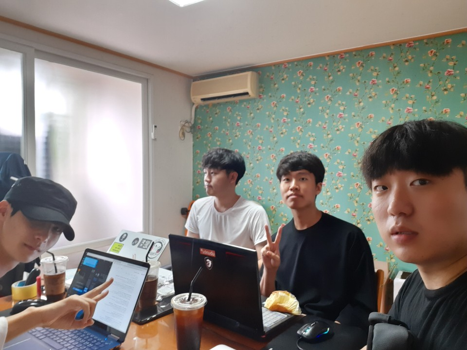

오늘은 첫 모각코를 한 날짜입니다.
아쉽게 한명이 시간이 맞지 않아 이번에만 불참했어요
자취방에서 도란도란 모여서 열심히 코딩했어요.
목표 공유와 회고
김경민: React개발환경 구축과 컴포넌트, props 개념의 이해와 응용
윈도우에서 React개발환경을 구축했고, 컴포넌트, props등을 활용하면 header부분을 수정하려 했을 때 모든 html파일에 들어가서 수정해야하는 사이트를 만들면서 실제로 느꼈던 어려움을 해소할 수 있다는 것을 알게되었고 추후 목표를 React를 이용하여 Github사이트를 구축해야겠다는 생각을 하였다.
문영균: Github와 Atom 연동해 사이트 수정
모각코 1일차의 목표는 github를 atom과 연동시키는 것이 목표였다. 이를 위해 Git Bash를 설치하여 git commit을 이용해 파일을 로컬저장소에 저장하는 데 성공했다. 그러나 기존의 파일들이 삭제되는 불상사가 발생하여 블로그를 새로 만들게 되었다. 모각코 다른 조원의 도움을 받아 github를 atom과 연동하는데 성공하고 html5 템플릿을 받고 이를 나에 맞게 수정하는 과정을 거치고 있다.
박재우: Github블로그 공부
I studied about How post my study log. first, If you want to post your writing, set layout, title, date and categories. If you want to upload your image file, you must upload image in any folder, and write address about image in postfile. Then we can see the image in post. Next I learned about markdown. this can size up my post writing, change font, make check list, table and other various effects of writing
유찬희: Github블로그 공부
깃허브 공부를 한 후 깃허브 블로그를 만들고 포스터를 작성하였습니다.